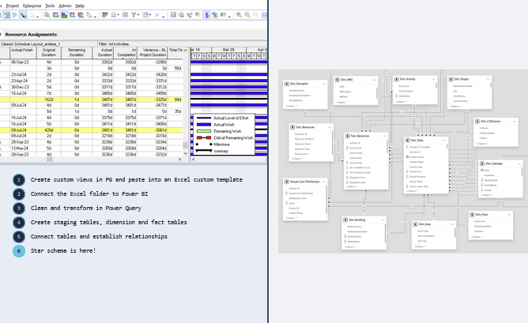

From Primavera P6 to Star Schema
POWER BI · POWER QUERY · PRIMAVERA P6 · EVM · AEC
Automated ETL pipeline from Primavera P6 exports to a production-grade Power BI star schema. Zero-touch refresh across multiple project phases — WBS hierarchy, time-phased cost distribution, and full data lineage resolved in Power Query.